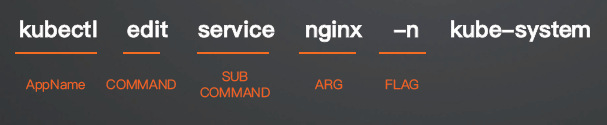

Cobra
Cobra 是一个用于创建 Golang CLI 应用程序的库，提供了命令行参数解析、自动生成帮助文档和命令补全功能。它简化了多级命令行结构的开发，使开发者能够轻松创建层级命令和子命令。Cobra 是由 Go 团队成员 spf13 为 Hugo 项目创建的，并已被许多流行的 Go 项目所采用，如 Docker、Kubernetes、Hugo、Etcd 等。
Cobra 优势
-
很容易实现子命令，类似于 kubectl get pod、kubectl get deployment
-
自动生成 --help flag
-
自动命令建议（针对输错命令的情况）
-
自动生成 bash complete
-
根据命令自动生成使用文档
-
支持设置全局、本地和级联 flag
- 例如对于 kubectl --kubeconfig flag 而言是全局的
-
社区活跃：kubectl、helm、docker 等 cli 工具也用
Cobra 核心概念
- 命令（COMMAND）：命令表示要执行的操作。
- 参数（ARG）：命令的参数，一般用来表示操作的对象。
- 标志（FLAG）：命令的修饰，可以调整操作的行为。

一个好的命令行程序在使用时读起来像句子，用户会自然的理解并知道如何使用该程序。
要编写一个好的命令行程序，需要遵循的模式是 APPNAME VERB NOUN --ADJECTIVE 或 APPNAME COMMAND ARG --FLAG。
在这里 VERB 代表动词，NOUN 代表名词，ADJECTIVE 代表形容词。
以下是一个现实世界好的命令行程序的例子：
$ hugo server --port=1313
以上示例中，server 是一个命令（子命令），port 是一个标志（1313是标志的参数，但不是命令的参数 ARG）。
Quick Start
-
安装 cobra
`go install ``github.com/spf13/cobra-cli@latest` -
安装好后就可以像其他 Go 语言库一样导入 Cobra 包并使用了。
import "``github.com/spf13/cobra``"
-
创建 k8scopilot
`go mod init ``github.com/ketitongxue/k8scopilot` -
初始化项目：
-
将 go 包安装路径导入到环境变量中
export PATH=$HOME/go/bin:$PATH
cobra-cli init --author "JuZX" --license mit
- 修改 root.go 描述
package cmd
import (
"os"
"github.com/spf13/cobra"
)
// rootCmd represents the base command when called without any subcommands
var rootCmd = &cobra.Command{
Use: "k8scopilot",
Short: "A brief description of your application",
Long: `A longer description that spans multiple lines and likely contains
examples and usage of using your application. For example:
Cobra is a CLI library for Go that empowers applications.
This application is a tool to generate the needed files
to quickly create a Cobra application.`,
// Uncomment the following line if your bare application
// has an action associated with it:
Run: func(cmd *cobra.Command, args []string) {
fmt.Println("Hello World!")
},
}
// Execute adds all child commands to the root command and sets flags appropriately.
// This is called by main.main(). It only needs to happen once to the rootCmd.
func Execute() {
err := rootCmd.Execute()
if err != nil {
os.Exit(1)
}
}
func init() {
// Here you will define your flags and configuration settings.
// Cobra supports persistent flags, which, if defined here,
// will be global for your application.
// rootCmd.PersistentFlags().StringVar(&cfgFile, "config", "", "config file (default is $HOME/.k8scopilot.yaml)")
// Cobra also supports local flags, which will only run
// when this action is called directly.
rootCmd.Flags().BoolP("toggle", "t", false, "Help message for toggle")
}
package main
import "github.com/ketitongxue/k8scopilot/cmd"
func main() {
cmd.Execute()
}
-
cobra.Command 是一个结构体，代表一个命令，其各个属性含义如下：
- Use 是命令的名称
- Short 代表当前命令的简短描述
- Long 代表当前命令的完整描述
- Run 是一个函数，当执行命令时会调用此函数
cmd.Execute()是命令的执行入口，其内部会解析os.Args[1:]参数列表（默认情况下是这样，也可以通过Command.SetArgs方法设置参数），然后遍历命令树，为命令找到合适的匹配项和对应的标志。
编译并运行命令
现在，我们就可以编译并运行这个命令行程序了。
# 编译
$ go build -o k8scopilot
# 执行
$ ./k8scopilot
Hello World!
以上我们编译并执行了 hugo 程序，输出内容正是 cobra.Command 结构体中 Run 函数内部代码的执行结果。
我们还可以使用 --help 查看这个命令行程序的使用帮助。
$ ./k8scopilot --help
A longer description that spans multiple lines and likely contains
examples and usage of using your application. For example:
Cobra is a CLI library for Go that empowers applications.
This application is a tool to generate the needed files
to quickly create a Cobra application.
Usage:
k8scopilot [flags]
Flags:
-h, --help help for k8scopilot
-t, --toggle Help message for toggle
这里打印了 cobra.Command 结构体中 Long 属性的内容，如果 Long 属性不存在，则打印 Short 属性内容。
k8scopilot 命令用法为 k8scopilot [flags]，如 k8scopilot --help。
这个命令行程序自动支持了 -h/--help 标志。
以上就是使用 Cobra 编写一个命令行程序最常见的套路，这也是 Cobra 推荐写法。
当前项目目录结构如下：
$ tree k8scopilot
k8scopilot
├── cmd
│ └── root.go
├── go.mod
├── go.sum
├── k8scopilot
├── LICENSE
└── main.go
2 directories, 6 files
Cobra 程序目录结构基本如此，main.go 作为命令行程序的入口，不要写过多的业务逻辑，所有命令都应该放在 cmd/ 目录下，以后不管编写多么复杂的命令行程序都可以这么来设计。
添加子命令
- 使用
cobra-cli add添加
% cobra-cli add hello
hello created at /Users/keti/go/src/github.com/ketitongxue/k8scopilot
会自动在 /k8scopilot/cmd/ 生成 hello.go 文件
/*
Copyright © 2025 NAME HERE <EMAIL ADDRESS>
*/
package cmd
import (
"fmt"
"github.com/spf13/cobra"
)
// helloCmd represents the hello command
var helloCmd = &cobra.Command{
Use: "hello",
Short: "A brief description of your command",
Long: `A longer description that spans multiple lines and likely contains examples
and usage of using your command. For example:
Cobra is a CLI library for Go that empowers applications.
This application is a tool to generate the needed files
to quickly create a Cobra application.`,
Run: func(cmd *cobra.Command, args []string) {
fmt.Println("hello called")
},
}
func init() {
rootCmd.AddCommand(helloCmd)
// Here you will define your flags and configuration settings.
// Cobra supports Persistent Flags which will work for this command
// and all subcommands, e.g.:
// helloCmd.PersistentFlags().String("foo", "", "A help for foo")
// Cobra supports local flags which will only run when this command
// is called directly, e.g.:
// helloCmd.Flags().BoolP("toggle", "t", false, "Help message for toggle")
}
% go build -o k8scopilot
% ./k8scopilot hello
hello called
再次查看帮助信息：
./k8scopilot --help
A longer description that spans multiple lines and likely contains
examples and usage of using your application. For example:
Cobra is a CLI library for Go that empowers applications.
This application is a tool to generate the needed files
to quickly create a Cobra application.
Usage:
k8scopilot [flags]
k8scopilot [command]
Available Commands:
completion Generate the autocompletion script for the specified shell
hello A brief description of your command
help Help about any command
Flags:
-h, --help help for k8scopilot
-t, --toggle Help message for toggle
Use "k8scopilot [command] --help" for more information about a command.
这次的帮助信息更为丰富，除了可以使用 k8scopilot [flags] 语法，由于子命令的加入，又多了一个 k8scopilot [command] 语法可以使用，如 k8scopilot hello。
现在有三个可用命令：
completion可以为指定的 Shell 生成自动补全脚本，将在 Shell 补全 小节进行讲解。help用来查看帮助，同-h/--help类似，可以使用k8scopilot help command语法查看command命令的帮助信息。hello为新添加的子命令。
查看子命令帮助
./k8scopilot hello --help
A longer description that spans multiple lines and likely contains examples
and usage of using your command. For example:
Cobra is a CLI library for Go that empowers applications.
This application is a tool to generate the needed files
to quickly create a Cobra application.
Usage:
k8scopilot hello [flags]
Flags:
-h, --help help for hello
添加第多级子命令(subcommand)
% cobra-cli add world -p 'helloCmd'
world created at /Users/keti/go/src/github.com/ketitongxue/k8scopilot
- -p 指定子命令所属的父命令(parent)
- 父命令只输出使用方法，不写业务逻辑
% go build -o k8scopilot
% ./k8scopilot hello world
world called
使用命令行标志
Cobra 完美适配 pflag，结合 pflag 可以更灵活的使用标志功能。
Flag 类型
-
String 类型
- StringVar(&variable, "flag", "default", "description") ------------> 不带缩写
- StringVarP(&variable, "flag", "shorthand", "default", "description") --------> 带缩写
- StringSliceVar(&variable, "flag", []string{}, "description") ---------> 可接受数组, cli 通过传多个 flag
- StringSliceVarP(&variable, "flag", "shorthand", []string{}, "description")
-
Bool 类型
- BoolVar(&variable, "flag", false, "description")
- BoolVarP(&variable, "flag", "shorthand", false, "description")
-
Int 类型
- IntVar(&variable, "flag", 0, "description")
- IntVarP(&variable, "flag", "shorthand", 0, "description")
-
Float 类型
- Float64Var(&variable, "flag", 0.0, "description")
- Float64VarP(&variable, "flag", "shorthand", 0.0, "description")
添加 Flag
-
PersistentFlags：持久 Flag，定义它的命令和子命令都可以使用，例如在 rootCmd 里添加全局 Flag
var kubeconfig string defaultKubeconfig := "$HOME/.kube/config" rootCmd.PersistentFlags().StringVarP(&kubeconfig, "kubeconfig", "k", defaultKubeconfig, "kubeconfig file") var namespace string rootCmd.PersistentFlags().StringVarP(&namespace, "namespace", "n", "default", "namespace")- 在 world.go 里可以直接读取
-
本地 Flags：仅限于定义它的命令可以使用
worldCmd.Flags().StringVarP(&Source, "source", "s", "", "Source directory to read from") -
父命令的本地标志
- 默认情况下，Cobra 仅解析目标命令上的本地标志，忽略父命令上的本地标志。通过在父命令上启用 Command.TraverseChildren 属性，Cobra 将在执行目标命令之前解析每个命令的本地标志。
var rootCmd = &cobra.Command{ Use: "k8scopilot", TraverseChildren: true, } -
默认 Flag 都是可选的，如果是必须的 Flag 可通过以下方式设置
worldCmd.Flags().StringVarP(&Source, "source", "s", "", "Source directory to read from") rootCmd.MarkFlagRequired("source")- 不设置则会报错
定义好以上几个标志后，为了展示效果，我们对 rootCmd.Run 方法做些修改，分别打印 kubeconfig、namespace 几个变量。
Run: func(cmd *cobra.Command, args []string) {
fmt.Println("Hello World!")
fmt.Printf("kubeconfig: %v\n", kubeconfig)
fmt.Printf("namespace: %v\n", namespace)
},
示例：
全局
修改 root.go
package cmd
import (
"os"
"path/filepath"
"github.com/spf13/cobra"
)
// rootCmd represents the base command when called without any subcommands
var rootCmd = &cobra.Command{
Use: "k8scopilot",
Short: "这是一个K8s copilot 工具",
Long: `这是一个K8s copilot 工具，以下是一些用法示例：
1.
2.
`,
Version: "v0.0.1",
// Uncomment the following line if your bare application
// has an action associated with it:
// Run: func(cmd *cobra.Command, args []string) { },
}
// Execute adds all child commands to the root command and sets flags appropriately.
// This is called by main.main(). It only needs to happen once to the rootCmd.
func Execute() {
err := rootCmd.Execute()
if err != nil {
os.Exit(1)
}
}
var kubeconfig string
var namespace string
func init() {
// Here you will define your flags and configuration settings.
// Cobra supports persistent flags, which, if defined here,
// will be global for your application.
// rootCmd.PersistentFlags().StringVar(&cfgFile, "config", "", "config file (default is $HOME/.k8scopilot.yaml)")
// Cobra also supports local flags, which will only run
// when this action is called directly.
// rootCmd.Flags().BoolP("toggle", "t", false, "Help message for toggle")
homeDir, _ := os.UserHomeDir()
defaultKubeconfig := filepath.Join(homeDir, ".kube", "config")
rootCmd.PersistentFlags().StringVarP(&kubeconfig, "kubeconfig", "k", defaultKubeconfig, "Path to the kubeconfig")
rootCmd.PersistentFlags().StringVarP(&namespace, "namespace", "n", "default", "The namespace to use")
}
测试效果
./k8scopilot --kubeconfig
Error: flag needs an argument: --kubeconfig
Usage:
k8scopilot [command]
Available Commands:
hello A brief description of your command
help Help about any command
Flags:
-h, --help help for k8scopilot
-k, --kubeconfig string Path to the kubeconfig (default "$HOME/.kube/config")
-n, --namespace string The namespace to use (default "default")
-v, --version version for k8scopilot
Use "k8scopilot [command] --help" for more information about a command.
./k8scopilot hello world --help
A longer description that spans multiple lines and likely contains examples
and usage of using your command. For example:
Cobra is a CLI library for Go that empowers applications.
This application is a tool to generate the needed files
to quickly create a Cobra application.
Usage:
k8scopilot hello world [flags]
Flags:
-h, --help help for world
Global Flags:
-k, --kubeconfig string Path to the kubeconfig (default "$HOME/.kube/config")
-n, --namespace string The namespace to use (default "default")
如何传到子cmd中？
在world中修改 Run 部分
/*
Copyright © 2025 NAME HERE <EMAIL ADDRESS>
*/
package cmd
import (
"fmt"
"github.com/spf13/cobra"
)
// worldCmd represents the world command
var worldCmd = &cobra.Command{
Use: "world",
Short: "A brief description of your command",
Long: `A longer description that spans multiple lines and likely contains examples
and usage of using your command. For example:
Cobra is a CLI library for Go that empowers applications.
This application is a tool to generate the needed files
to quickly create a Cobra application.`,
Run: func(cmd *cobra.Command, args []string) {
fmt.Println("kubeconfig:", kubeconfig)
fmt.Println("namespace:", namespace)
},
}
func init() {
helloCmd.AddCommand(worldCmd)
// Here you will define your flags and configuration settings.
// Cobra supports Persistent Flags which will work for this command
// and all subcommands, e.g.:
// worldCmd.PersistentFlags().String("foo", "", "A help for foo")
// Cobra supports local flags which will only run when this command
// is called directly, e.g.:
// worldCmd.Flags().BoolP("toggle", "t", false, "Help message for toggle")
}
./k8scopilot hello world hello world --kubeconfig abc
kubeconfig: abc
namespace: default
./k8scopilot hello world hello world --kubeconfig abc -n demo
kubeconfig: abc
namespace: demo
Local
var source string
func init() {
helloCmd.AddCommand(worldCmd)
worldCmd.Flags().StringVarP(&source, "source", "s", "world", "The source of the message")
}
./k8scopilot hello world --help
A longer description that spans multiple lines and likely contains examples
and usage of using your command. For example:
This application is a tool to generate the needed files
to quickly create a Cobra application.
Usage:
k8scopilot hello world [flags]
Flags:
-h, --help help for world
-s, --source string The source of the message (default "world")
其他基础设置
-
设置 Version
- 在 root.go &cobra.Command{} 里设置 Version
-
标记命令已废弃
- 在子命令中 &cobra.Command{} 里设置 Deprecated，打印输出提示
处理配置
除了将命令行标志的值绑定到变量，我们也可以将标志绑定到 Viper，这样就可以使用 viper.Get() 来获取标志的值了。
var author string
func init() {
rootCmd.PersistentFlags().StringVar(&author, "author", "YOUR NAME", "Author name for copyright attribution")
viper.BindPFlag("author", rootCmd.PersistentFlags().Lookup("author"))
}
另外，我们可以使用 cobra.OnInitialize() 来初始化配置文件。
var cfgFile string
func init() {
cobra.OnInitialize(initConfig)
rootCmd.Flags().StringVarP(&cfgFile, "config", "c", "", "config file")
}
func initConfig() {
if cfgFile != "" {
viper.SetConfigFile(cfgFile)
} else {
home, err := homedir.Dir()
if err != nil {
fmt.Println(err)
os.Exit(1)
}
viper.AddConfigPath(home)
viper.SetConfigName(".cobra")
}
if err := viper.ReadInConfig(); err != nil {
fmt.Println("Can't read config:", err)
os.Exit(1)
}
}
传递给 cobra.OnInitialize() 的函数 initConfig 函数将在调用命令的 Execute 方法时运行。
参数验证
在执行命令行程序时，我们可能需要对命令参数进行合法性验证，cobra.Command 的 Args 属性提供了此功能。
Args 属性类型为一个函数：func(cmd *Command, args []string) error，可以用来验证参数。
Cobra 内置了以下验证函数：
NoArgs：如果存在任何命令参数，该命令将报错。ArbitraryArgs：该命令将接受任意参数。OnlyValidArgs：如果有任何命令参数不在Command的ValidArgs字段中，该命令将报错。MinimumNArgs(int)：如果没有至少 N 个命令参数，该命令将报错。MaximumNArgs(int)：如果有超过 N 个命令参数，该命令将报错。ExactArgs(int)：如果命令参数个数不为 N，该命令将报错。ExactValidArgs(int)：如果命令参数个数不为 N，或者有任何命令参数不在Command的ValidArgs字段中，该命令将报错。RangeArgs(min, max)：如果命令参数的数量不在预期的最小数量min和最大数量max之间，该命令将报错。
内置验证函数用法如下：
var versionCmd = &cobra.Command{
Use: "version",
Run: func(cmd *cobra.Command, args []string) {
fmt.Println("Hugo Static Site Generator v0.9 -- HEAD")
},
Args: cobra.MaximumNArgs(2), // 使用内置的验证函数，位置参数多于 2 个则报错
}
定义自己的 Help 命令
如果你对 Cobra 自动生成的帮助命令不满意，我们可以自定义帮助命令或模板。
cmd.SetHelpCommand(cmd *Command)
cmd.SetHelpFunc(f func(*Command, []string))
cmd.SetHelpTemplate(s string)
Cobra 提供了三个方法来实现自定义帮助命令，后两者也适用于任何子命令。
未知命令建议
在我们使用 git 命令时，有一个非常好用的功能，能够对用户输错的未知命令智能提示。
示例如下：
$ git statu
git: 'statu' is not a git command. See 'git --help'.
The most similar commands are
status
stage
stash
当我们输入一个不存在的命令 statu 时，git 会提示命令不存在，并且给出几个最相似命令的建议。
这个功能非常实用，幸运的是，Cobra 自带了此功能。
如果你想彻底关闭此功能，可以使用如下设置：
command.DisableSuggestions = true
或者使用如下设置调整字符串匹配的最小距离：
command.SuggestionsMinimumDistance = 1
SuggestionsMinimumDistance 是一个正整数，表示输错的命令与正确的命令最多有几个不匹配的字符（最小距离），才会给出建议。如当值为 1 时，用户输入 k8scopilot versiox 会给出建议，而如果用户输入 k8scopilot versixx 时，则不会给出建议，因为已经有两个字母不匹配 version 了。
Shell 补全
前文在讲添加子命令小节时，我们见到过 completion 子命令，可以为指定的 Shell 生成自动补全脚本，现在我们就来讲解它的用法。
直接执行 k8scopilot completion 命令，我们可以查看它支持的几种 Shell 类型 bash、fish、powershell、zsh。
./k8scopilot completion
Generate the autocompletion script for k8scopilot for the specified shell.
See each sub-command's help for details on how to use the generated script.
Usage:
k8scopilot completion [command]
Available Commands:
bash Generate the autocompletion script for bash
fish Generate the autocompletion script for fish
powershell Generate the autocompletion script for powershell
zsh Generate the autocompletion script for zsh
Flags:
-h, --help help for completion
Global Flags:
-k, --kubeconfig string kubeconfig file (default "$HOME/.kube/config")
-n, --namespace string namespace (default "default")
Use "k8scopilot completion [command] --help" for more information about a command.
要想知道自己正在使用的 Shell 类型，可以使用如下命令：
$ echo $0
-zsh
可以发现，我使用的是 zsh，所以我就以 zsh 为例，来演示下 completion 命令补全用法。
使用 -h/--help 我们可以查看使用说明：
$ ./k8scopilot completion zsh -h
Generate the autocompletion script for the zsh shell.
If shell completion is not already enabled in your environment you will need
to enable it. You can execute the following once:
echo "autoload -U compinit; compinit" >> ~/.zshrc
To load completions in your current shell session:
source <(k8scopilot completion zsh)
To load completions for every new session, execute once:
#### Linux:
k8scopilot completion zsh > "${fpath[1]}/_k8scopilot"
#### macOS:
k8scopilot completion zsh > $(brew --prefix)/share/zsh/site-functions/_k8scopilot
You will need to start a new shell for this setup to take effect.
Usage:
k8scopilot completion zsh [flags]
Flags:
-h, --help help for zsh
--no-descriptions disable completion descriptions
Global Flags:
-k, --kubeconfig string kubeconfig file (default "$HOME/.kube/config")
-n, --namespace string namespace (default "default")
根据帮助信息，如果为当前会话提供命令行补全功能，可以使用 source <(k8scopilot completion zsh) 命令来实现。
如果要让命令行补全功能永久生效，Cobra 则非常贴心的为 Linux 和 macOS 提供了不同命令。
你可以根据提示选择自己喜欢的方式来实现命令行补全功能。
我这里只实现为当前会话提供命令行补全功能为例进行演示：
# 首先在项目根目录下，安装 hugo 命令行程序，安装后软件存放在 $GOPATH/bin 目录下
$ go install .
# 添加命令行补全功能
$ source <(k8scopilot completion zsh)
# 现在命令行补全已经生效，只需要输入一个 `v`，然后按下键盘上的 `Tab` 键，命令将自动补全为 `version`
$ k8scopilot v
# 命令已被自动补全
$ k8scopilot version
version PersistentPreRun
version PreRun
k8scopilot Static Site Generator v0.9 -- HEAD
其实将命令 source <(hugo completion zsh) 添加到 ~/.zshrc 文件中，也能实现每次进入 zsh 后自动加载 hugo 的命令行补全功能。
总结
在我们日常开发中，编写命令行程序是必不可少，很多开源软件都具备强大的命令行工具，如 K8s、Docker、Git 等。
一款复杂的命令行程序通常有上百种使用组合，所以如何组织和编写出好用的命令行程序是很考验开发者功底的，而 Cobra 则为我们开发命令行程序提供了足够的便利。这也是为什么我将其称为命令行框架，而不仅仅是一个 Go 第三方库。
Cobra 功能非常强大，要使用它来编写命令行程序首先要明白三个概念：命令、参数和标志。
Cobra 不仅支持子命令，还能够完美兼容 pflag 和 Viper 包，因为这三个包都是同一个作者开发的。关于标志，Cobra 支持持久标志、本地标志以及将标志标记为必选。Cobra 可以将标志绑定到 Viper，方便使用 viper.Get() 来获取标志的值。对于命令行参数，Cobra 提供了不少验证函数，我们也可以自定义验证函数。
Cobra 还提供了几个 Hooks 函数 PersistentPreRun、PreRun、PostRun、PersistentPostRun，可以分别在执行 Run 前后来处理一段逻辑。
如果觉得 Cobra 提供的默认帮助信息不能满足需求，我们还可以定义自己的 Help 命令和 Usage Message，非常灵活。
Cobra 还支持未知命令的智能提示功能以及 Shell 自动补全功能，此外，它还支持自动生成 Markdown、ReStructured Text、Man Page 三种格式的文档。这对命令行工具的使用者来说非常友好，还能极大减少开发者的工作量。
最后，Cobra 的命令行工具 cobra-cli 进一步提高了编写命令行程序的效率，非常推荐使用。
- Cobra 官网：https://cobra.dev/
- Cobra 源码：https://github.com/spf13/cobra
- Cobra 文档：https://pkg.go.dev/github.com/spf13/cobra
- Cobra-CLI 文档：https://github.com/spf13/cobra-cli/blob/main/README.md